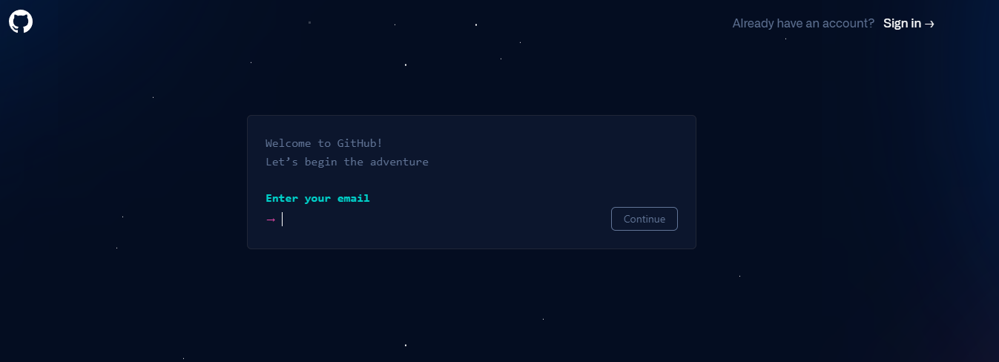
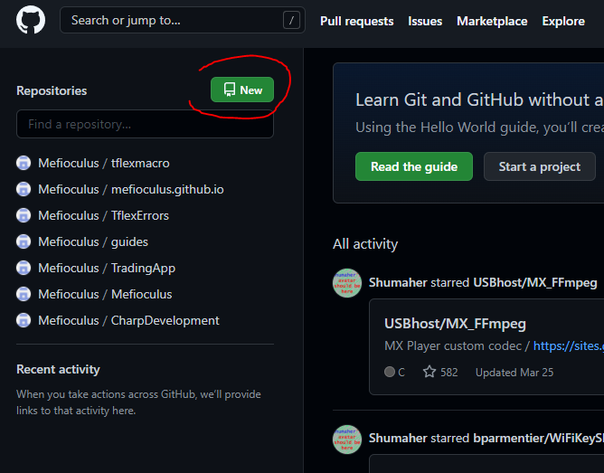
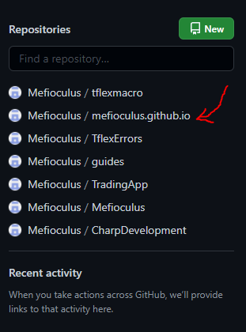
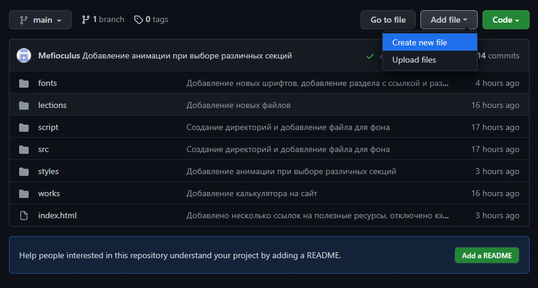
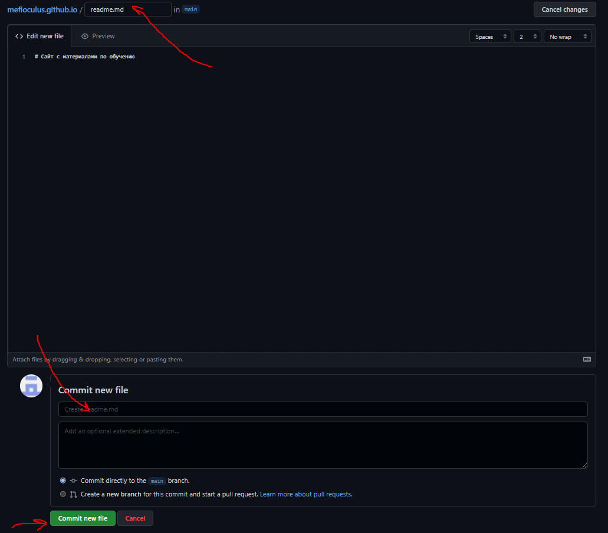

Вводные
На данном занятии мы попробуем понять, что такое git и для чего он нужен. Так же мы попробуем завести учетку на сайте github для того, чтобы захостить на нем свои работы.
Материалы, используемые в данном уроке
Коротко про все темы:
О git
В процессе написания кода (хотя это же можно распространить и на любую другую творческую деятельность) необходимо сохранять данные, чтобы в дальнейшем к ним возвращаться.
Но так же зачастую нам необходимо не просто сохранять данные - нам необходимо иметь несколько версий одного и того же проекта, для того, чтобы всегда можно было вернуть вычеркнутое из документа.
Данная проблема решается вручную путем создания дополнительных копий с файлами, которым мы присваиваем самые разные забавные название.
Но у ручного решения данной проблемы есть свои недостатки - очень быстро мы сами начинаем путаться в том, что и где находится, и что вообще за файл с названием final-final9.
В разработке кода, где вся работа по сути состоит из текста, а текста для одной программы нужно написать очень большое количество - данная проблема очень большая.
Поэтому с возникновением программирования очень быстро стали появляться системы контроля версий - программы, главная задача которых заключалась в упорядочивании и предоставлении более удобного доступа к различным версиям одного документа.
В данный момент самой распространенной и удобной системой контроля версий является git, разработанный Линусом Торвальдсом (автором Linux) для отслеживания версий исходного кода.
Помимо сохранения текущего состояния проекта (имеется ввиду всех файлов, которые входят в проект), Git так же позволяет в любой момент откатывать любой файл проекта на одну из предыдущих версий, позволяет сравнивать два документа, а так же позволяет работать большому количеству разработчиков над одним и тем же проектом (и даже одним и тем же файлом).
Без git сложно представить работу в крупных IT компаниях, и понимание, как работает данный инструмент, необходимо всех, кто в той или иной мере притрагивается к файлам с исходным кодом.
Благодаря всем тем возможностям, которые git предоставляет пользователю, пользователи могут спокойно экспериментировать с кодом, зная, что никакая правка не испортит того, что уже было написано.
Сам по себе Git является консольной утилитой, но при этом есть большое множество программ, в которые он интегрирован.
А так же есть сайты, на которых аккумулируются git репозитории (под репозиторием понимается папка с проектом).
Одним таким сайтом мы будем пользоваться на практике для того, чтобы писать наши странички - github
Создание учетной записи и репозитория
Основаня причина, для которой мы хотим создать репозиторий - воспользоваться функционалом github pages, который позволяет выкладывать в открытый доступ статический сайт, дает доступ к очень удобному инструментацию по редактированию страниц, а так же к сохранению всех изменений, который были произведены над сайтом. Для того, чтобы зарегистрироваться на github, нужно перейти на главную страницу, нажать на sign up, после чего заполнить всю информацию, необходимую для регистрации в интерактивном режиме.
Cледующий шаг - создание нового репозитория, в котором мы в будущем будем размещать все файлы, которые относятся к сайту (файлы html, css, js, лого и картинки, шрифты). Для этого мы нажимаем на кнопку создания нового репозитория (NEW), которая находится в левой части личной страницы на github

После этого открывается окно с заполнением основной информации, требуемой для создания нового репозитория.
Основные параметры - название репозитория (данное название будет так же идентификатором репозитория, из чего следует, что у одного пользователя не может быть два репозитория с одинаковым названием).
Для того, чтобы из данного репозитория работала функциональность github pages, имя для этого репозитория необходимо задать в следующим формате: 'user.github.io', где user - имя пользователя, которое вы ввели при создании репозитория.
Так же следуют выбрать, каким будет данный репозиторий: его можно сделать публичным, а можно сделать приватным.
Публичные репозитории доступны всем пользователям интернета, а приватные репозитории по умолчанию доступны только автору репозитория (с возможностью предоставления доступа нескольким другим пользователям).
Так же есть несколько опциональных параметров, которые желательно заполнить. К таким параметрам относится описание репозитория (description), а так же галочка напротив параметка create readme file.
Первый параметр чисто информационный, а второй параметр создает новый репозиторий уже с файлов (и, следовательно, сразу его инициирует, что несколько облегчает процесс первичного заполнения информации).
После создания репозитория он появится в списке репозиториев, который находится под кнопкой создания нового репозитория на основной странице профиля.
Далее, заходим в репозиторий и создаем новый файл, который будет нашей главной страничкой. Для этого нажимаем на кнопку create new file, после чего открывается окно создания нового файла (так же можно воспользоваться функцией загрузки файла, но данный вариант предлагаю вам опробовать самим).
 
В окне создания нового файла основным параметром, которое нужно заполнить является название файла.
Поле названия файла находится в заголовке.
Обращаю ваше внимание, что таким образом можно создавать не только файлы, но и директории.
Для того, чтобы создать директорию, после названия директории в пути файла нужно поставить символ слэша - '/'.
Если мы создаем файл, то мы так же можем заполнить его содержание (но можем создать пустой файл, который заполним потом).
После заполнения его содержания мы должны подтвердить его создание.
Делается это при помощи кнопки commit new file, которая по сути создает новое изменение в репозитории (которое в данном случае добавляет новый файл).
У любого коммита есть один очень важный параметр - сообщение коммита, которое по сути позволит вам проще находить коммит с нужными изменениями.
По умолчанию у создания нового файла стоит сообщение Create new file, вы можете оставить этот вариант, но при дальнейших изменениях важно кратко описывать те изменения, которые вы вносили.
После того, как в репозитории появится файл index.html, данная страница появится в индтернете по адресу 'https://user.github.io' - где user - ваше имя пользователя на github.
Использование Git для написания кода
Fill